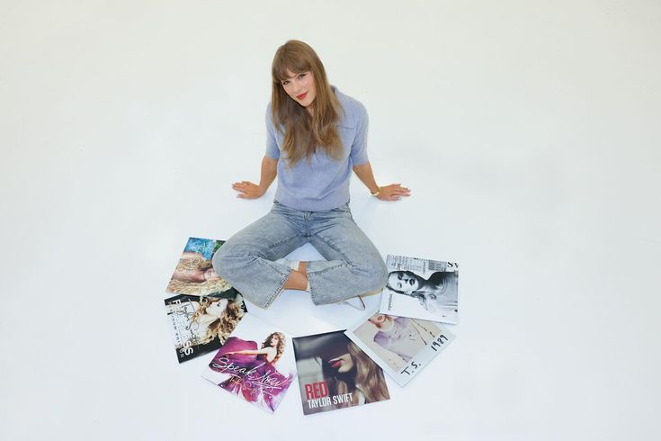

¿Que Son?
Taylor Swift, al comienzo de su carrera, firmó con la discográfica Big Machine Records cuando tenía apenas 15 años. Bajo este sello lanzó sus primeros seis álbumes: Taylor Swift, Fearless, Speak Now, Red, 1989 y Reputation.
En junio de 2019, el fundador de la discográfica, Scott Borchetta,
vendió la compañía a Scooter Braun por aproximadamente 300 millones de dólares.
Con esta venta, Scooter no solo se convirtió en propietario de la compañía,
sino también de los masters (las grabaciones originales) de todos los álbumes de Taylor hasta ese momento,
ya que los derechos no le pertenecían a ella, sino a la discográfica.
Esto significaba que, a partir de ese momento, las ganancias generadas por las grabaciones originales
y los videoclips irian todo para Scooter. Además, Taylor tenía limitaciones sobre el uso de esas grabaciones, no podía utilizarlas libremente, ya que no podia sacar ganancias de las mismas.
El problema principal fue que Taylor se enteró de la venta al mismo tiempo que el público. No tuvo la oportunidad de comprarlos y, además, quien los adquirió era una persona con la que no tenía una buena relación ni compartía valores. En 2020, Scooter Braun vendió los masters a un fondo de inversión llamado Shamrock Holdings, y nuevamente Taylor no tuvo la oportunidad de comprarlos.

Taylor expresó que sentía que su trabajo de años, su historia personal (ya que muchas de sus canciones están basadas en sus propias experiencias), estaba siendo vendido sin su control, lo cual la motivó a querer recuperarlo. Por esta razón, en 2021 comenzó el proceso de regrabación de sus álbumes, dando origen a los Taylor’s Version. Inició con Fearless (Taylor’s Version), que incluía todas las canciones del álbum original, junto con nuevas canciones denominadas “From the Vault”, eran canciones que había escrito en su momento pero que no habían sido incluidas en la versión original. Hasta el momento, ha regrabado la mayoría de sus álbumes (sacando tambien las canciones “From the Vault”), menos dos Taylor Swift y Reputation.
Finalmente, en mayo de 2025, Taylor logró comprar todo su catálogo original de sus primeros seis álbumes a la empresa Shamrock Capital, recuperando así el control total de su música. Toda esta situación tuvo un gran impacto en la industria musical, generando conciencia sobre la importancia de que los artistas puedan ser dueños de su propio trabajo y que tengan esto en cuenta al momento de firmar contratos.